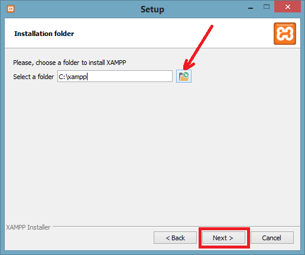
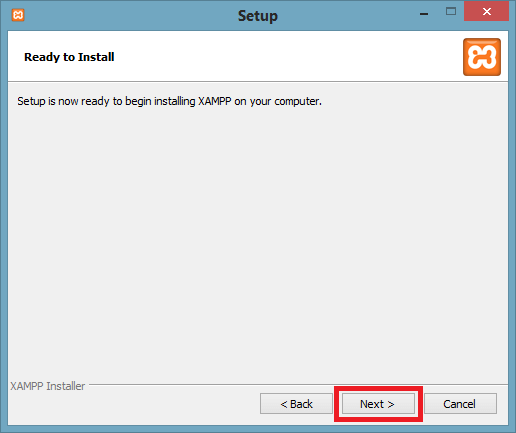
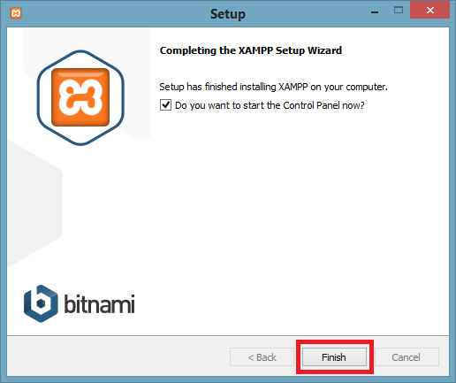
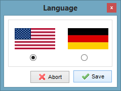

Install PHP
To install PHP, we will suggest you to install AMP (Apache, MySQL, PHP)
software stack. It is available for all operating systems. There are many
AMP options available in the market that are given below:
- WAMP for Windows
- LAMP for Linux
- MAMP for Mac
- SAMP for Solaris
- FAMP for FreeBSD
-
XAMPP (Cross, Apache, MySQL, PHP, Perl) for Cross Platform: It
includes some other components too such as FileZilla, OpenSSL,
Webalizer, Mercury Mail, etc.
If you are on Windows and don't want Perl and other features of XAMPP, you
should go for WAMP. In a similar way, you may use LAMP for Linux and MAMP
for Macintosh.
How to install XAMPP server on windows
We will learn how to install the XAMPP server on windows platform step by
step. Follow the below steps and install the XAMPP server on your system.
-
Step 1: Download the XAMPP server according to your window
requirement.
-
Step 2: After downloading XAMPP, double click on the downloaded
file and allow XAMPP to make changes in your system. A window will
pop-up, where you have to click on the Next button.
-
Step 3: Here, select the components, which you want to install
and click Next.
-
Step 4: Choose a folder where you want to install the XAMPP in
your system and click Next.

- Step 5: Click Next and move ahead.
-
Step 6: XAMPP is ready to install, so click on the
Next button and install the XAMPP.

-
Step 7: A finish window will display after successful
installation. Click on the Next button.

- Step 8: Choose your preferred language.

-
Step 9: XAMPP is ready to use. Start the Apache server and MySQL
and run the php program on the localhost. How to run PHP programs on
XAMPP, see in the next tutorial.
-
Step 10: If no error is shown, then XAMPP is running
successfully.